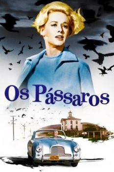

Os Pássaros (1963)


O próximo grito que se ouvir pode ser o seu.

Avaliação (TMDb):


7.5/10 (2.8K votos)
Avaliação (Usuário):
Outro Título:The Birds
País:United States, 119 minutos
Idiomas falados:Inglês, Espanhol
Gênero(s):Terror
Diretor(s):Alfred Hitchcock
Codec:MPEG-2 (DVD)
Número: 4302
Sinopse:
A pacata cidade de Bodega Bay, na Califórnia, vive momentos de terror quando milhares de pássaros se instalam na localidade e começam a atacar as pessoas.
Elenco:
Tippi Hedren, Rod Taylor, Jessica Tandy, Suzanne Pleshette, Veronica Cartwright, Ethel Griffies, Charles McGraw, Ruth McDevitt, Lonny Chapman, Joe Mantell
Tipo de mídia: DVD5,
Legendas: Inglês, Espanhol, Português, Cantonês,
Alugado: Não
Tela: 4:3